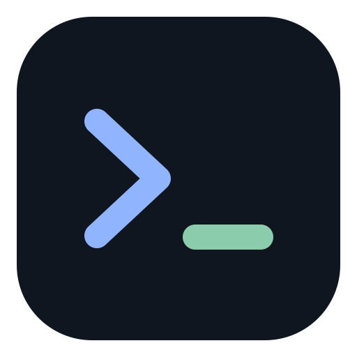

Production
Staging
Production
已连接端口转发
ops@production.example:22
Last login: Sat Oct 17 09:41:08 2026 ops@production:/srv/storefront$ docker compose ps NAME IMAGE STATUS api-gateway nginx:1.27-alpine Up 3 days (healthy) order-service company/orders:2.4 Up 3 days (unhealthy) postgres postgres:16 Up 3 days (healthy) redis redis:7-alpine Up 3 days ops@production:/srv/storefront$
⌁ 已连接 本机 → ProductionUTF-8
CPU 12.8% 内存 37.5%↓ 2.4 MiB/s ↑ 860 KiB/s